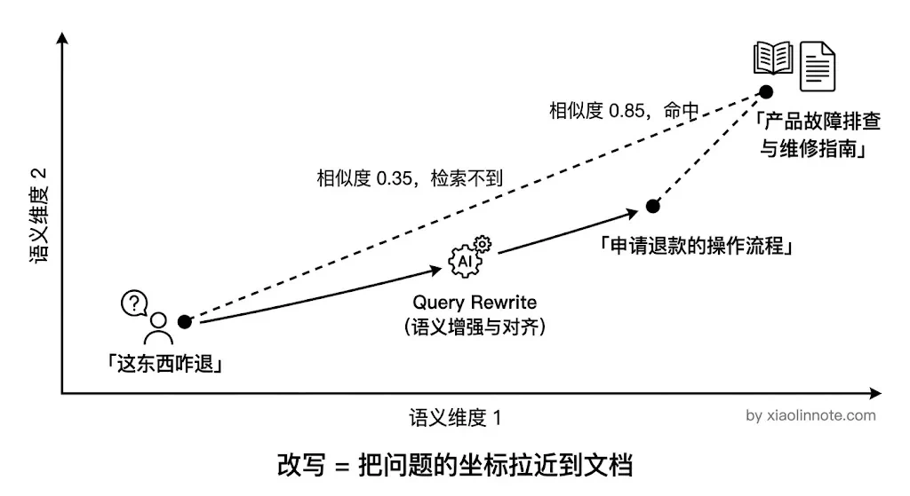
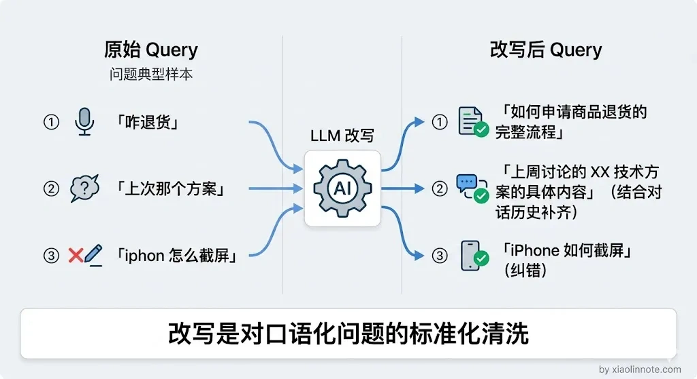
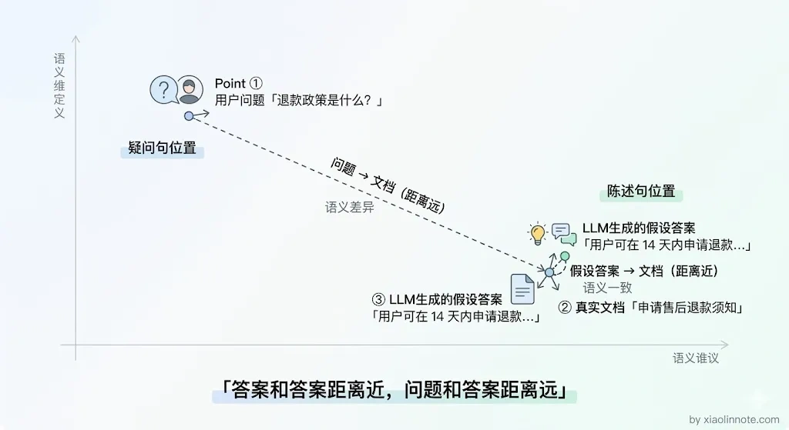
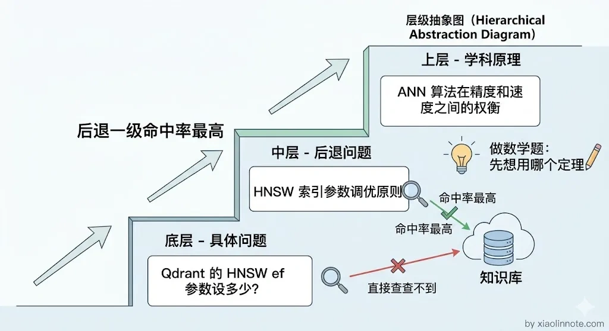
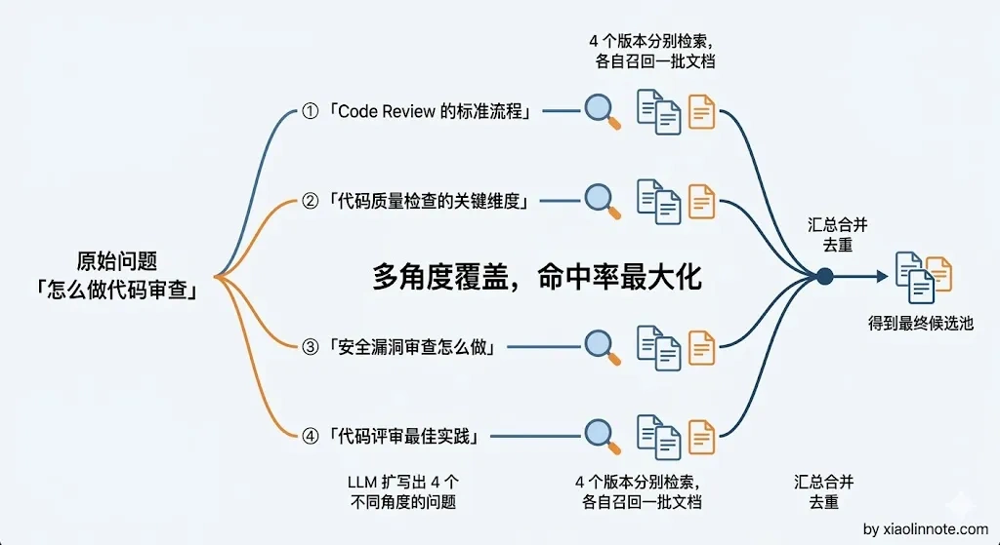

如何润色用户的 Query（Query Rewrite）？目的是什么？
👔面试官：RAG 系统里为什么要做 Query Rewrite？你了解哪些方法？
🙋♂️我：Query Rewrite 就是把用户的问题改写得更规范嘛，比如把口语转成书面语，主要就是为了提升检索效果，其他没什么特别的。
👔面试官：那用户问「这个功能怎么用」，知识库里写的是「XX 模块操作指南」，你光改写成书面语就能命中了？如果改写之后还是对不上呢？
🙋♂️我：那就多试几种改写方式呗，总能蒙对的……
👔面试官：蒙？你是说靠运气做检索优化？你有没有听说过 HyDE、Step-back Prompting 这些方法？它们各自解决什么问题你清楚吗？
这个问题其实比想象中更有深度，让我来展开讲讲。
💡 简要回答
我用 Query Rewrite 主要是为了弥补用户提问方式和知识库文档表述之间的语义鸿沟。用户的问题往往口语化、模糊、带缩写，而文档写的是正式书面语，向量相似度天然偏低，导致该召回的内容没被召回。
我接触过的方法主要有四种：第一是直接改写，让 LLM 把口语化的问题转成更精准的表述；第二是 Query 扩展，补充相关关键词；第三是 HyDE，让 LLM 先生成一个假设答案，然后用答案的向量去检索；第四是 Step-back Prompting，把具体问题往上抽象一层，检索更通用的背景知识。
📝 详细解析
为什么需要 Query Rewrite
用户和文档写作者之间有一道天然的表述鸿沟。
用户可能这样问：「这东西坏了咋整」，而文档里写的是「产品故障排查与维修指南」。你可能会想，这两句话意思差不多，向量检索应该能匹配上吧？遗憾的是，实际效果往往不如预期——即便语义相关，向量相似度也可能低到召回不了正确文档，因为口语和书面语在向量空间里的「坐标」差距不小。
Query Rewrite 就是在检索之前，先对用户的问题做加工，让它在向量空间里离正确文档更近。这相当于在出发前先校准导航，目的地不变，但路线更准。

方法一：直接改写（Query Rewriting）
表述鸿沟最简单的形态，就是口语化。把口语化、模糊的问题改写成更精准、更书面化的检索表述，这就是最基础的改写方式。改写的本质是消除口语化表达和书面知识库表述之间的向量距离，「这东西咋退」和「申请退款的操作流程」在向量空间里不是同一个邻居，改写就是把前者的向量拉近到后者。同时还可以补全上下文，处理代词指代（「这个功能」改写成具体功能名称），让多轮对话中的模糊引用变成检索可识别的具体词汇。
发给 LLM 的 Prompt 模板如下：
请将用户的问题改写成更适合知识库检索的表述。
要求：去掉口语化表达、补全缩写和指代、使用更正式的书面语、保留核心意图。
对话历史：{最近几轮对话}
用户问题：{原始问题}
只输出改写后的问题，不要解释：
示例效果：原始「上次说的那个退款的事，流程是啥」-> 改写后「申请商品退款的完整操作流程是什么」。

直接改写能解决口语化和指代不清的问题，但还有另一种鸿沟是改写搞不定的，问题和文档本来就是不同的文体，一个是疑问句，一个是陈述句，就算你把问题改写得再规范，它在向量空间里还是「问句」的坐标，而文档是「陈述句」的坐标，两类文体之间天然有距离。
这个问题催生了 HyDE 的出现。
方法二：HyDE（Hypothetical Document Embeddings）
理解了「问句和陈述句在向量空间里有距离」这个问题，HyDE 的思路就非常巧妙了。
HyDE 的直觉可以这样理解：正常你用问题的影子去找答案的样子，HyDE 先描绘出答案可能长什么样子，再去找长得像它的文档。先让 LLM 根据用户问题生成一段「假设性的答案」，再用这段假设答案的向量去检索文档。假设答案不需要准确，只需要「风格像文档」就够了，它的作用是充当一个向量上更好的「检索代理」。
很多人第一次听到 HyDE 会觉得奇怪：让 LLM 生成一个可能不准确的答案，再用这个答案去检索，这不是多此一举吗？其实不是。在向量空间里，答案到答案的距离，比问题到答案的距离要近得多。假设答案的作用不是「回答问题」，而是「扮演文档的角色」，用它当检索代理比用原始问题更高效。
生成假设答案用的 Prompt 模板：
请根据以下问题，生成一段可能的答案。
注意：不需要完全准确，只需要用于辅助检索，风格尽量像知识库文档。
问题：{用户问题}
假设答案：
示例效果：问题向量「退款政策是什么」和文档「申请售后退款须知」距离较远；而假设答案向量「用户可在购买后 14 天内申请退款...」和文档距离很近，能被正确召回。

HyDE 解决的是「文体差异」的问题，但还有一类情况是 HyDE 和直接改写都处理不好的——用户的问题太具体了，知识库里压根没有直接对应的答案，但有相关的背景原理文档。这种情况下，不管你怎么改写、怎么假设，都很难从具体问题直接跳到背景知识。于是就有了 Step-back Prompting。
方法三：Step-back Prompting（后退提问）
对于涉及具体细节的问题，有时候知识库里没有直接对应的答案，但有背景原理。Step-back Prompting 把具体问题「后退一步」，提升到更抽象的层次，先检索背景知识，再结合背景知识回答具体问题。
类比一下就很直观：就像你做一道数学题，不是一上来就硬套公式，而是先想想「这道题用的是哪种定理」，再用定理解题。知识库里可能没有「ef 参数设 100 是否合适」的直接答案，但一定有「HNSW 参数调优原则」这样的背景文档，把具体问题后退成背景问题，才能找到真正有用的参考资料。
生成「后退版本」问题的 Prompt 模板：
请将以下具体问题转化为一个更通用的背景问题，用于检索相关背景知识。
具体问题：{原始问题}
背景问题：
示例效果：具体问题「Qdrant 的 HNSW ef 参数设多少合适」-> 后退问题「HNSW 索引的参数调优原则是什么」。后退后的问题能命中更多通用背景文档，让 LLM 生成有原理支撑的答案。

前面三种方法都是在「一个问题」上做文章——要么改写它、要么给它配一个假设答案、要么把它抽象化。但有时候问题的角度本身就比较窄，用一个角度去检索，覆盖面不够。这时候就需要换个思路：不求一个问题改得更好，而是多生成几个不同角度的问题。
方法四：多 Query 扩展
用 LLM 把用户原始问题改写成 3～5 个不同角度的版本，分别去检索，然后把所有结果合并去重。核心思路是：只要有一个改写版本和文档的表述对上了，就能把正确的内容召回来，就像拦截网越宽，捕到鱼的概率越高。适合用户提问风格多变、和文档表述差异大的场景，代价是多几次 LLM 调用。

把这四种方法放在一起对比一下，选型时就有了清晰的依据：
| 方法 | 解决的核心问题 | 额外开销 | 适合场景 |
|---|---|---|---|
| 直接改写 | 口语化、指代不清、上下文丢失 | 1 次 LLM 调用 | 多轮对话场景 |
| HyDE | 问题和文档文体风格差异大 | 1 次 LLM 调用 | 专业知识库、文体差异明显 |
| Step-back | 具体问题需要背景知识辅助 | 1 次 LLM 调用 | 技术文档、需要原理支撑的场景 |
| 多 Query 扩展 | 单一角度覆盖不全 | N 次 LLM 调用 | 答案涉及多个维度的复杂问题 |
🎯 面试总结
回到开头的问题，Query Rewrite 可不是简单地把口语转书面语就完事了。它的核心目的是弥合用户提问和文档表述之间的语义鸿沟，而这个鸿沟有多种不同的形态。
口语化表达用直接改写，文体差异用 HyDE，问题太具体用 Step-back，角度单一用多 Query 扩展。
面试中回答这道题，关键是把「为什么要做 Query Rewrite」和「四种方法各自解决什么问题」讲清楚，让面试官看到你不是只会一种改写方式，而是理解了不同场景需要不同策略。